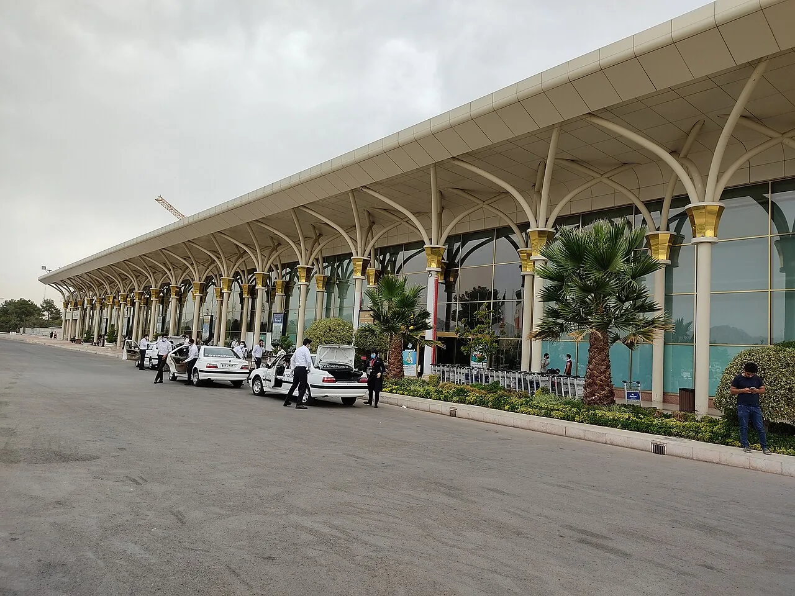

دليل التأمين
التأمين على السفر إلى إيران:
اقرأ التغطية والاستثناءات قبل الدفع.
الإجابة المختصرة
قبل شراء تأمين السفر إلى إيران، اقرأ الوثيقة لمعرفة التغطيات والاستثناءات وشروط المطالبة، وتحقق تحديداً من العلاج الطبي والإلغاء وتأخر الرحلات إن كانت تهمك. اسأل شركة التأمين عن القبول الجغرافي وآلية التواصل أثناء السفر، واحتفظ بنسخة من الوثيقة وأرقام الاتصال، ولا تفترض أن جميع المخاطر مشمولة.
قد يساعد التأمين المناسب على إدارة بعض المخاطر المالية أثناء السفر، لكن نوع التغطية والقبول والشروط تختلف بين الشركات والوثائق. لا تفترض أن كل وثيقة تغطي العلاج أو إلغاء الرحلة أو كل الحالات المرضية، ولا تعتبر هذا الدليل تأكيداً بأن التأمين مطلوب قانوناً لحالتك.

تحقق من متطلبات الدخول أولاً
قبل شراء الوثيقة، راجع متطلبات الدخول الرسمية الحالية بحسب جنسيتك ونوع وثيقة السفر ومدة الإقامة وطريقة الوصول. قد تختلف المتطلبات بين الحالات، لذلك لا تعتمد على مقال عام أو تجربة شخص آخر لإثبات أن التأمين إلزامي أو غير مطلوب.
ابدأ من دليل التأشيرة للزائر العربي ثم تحقق من البوابة الرسمية أو الجهة القنصلية المختصة.
ما التغطيات التي ينبغي قراءتها؟
اقرأ حدود التغطية الطبية، والطوارئ، والنقل الطبي، والأدوية، وإلغاء الرحلة أو تأخيرها، وفقدان الأمتعة إن كانت مشمولة. تحقق من الحد الأقصى لكل منفعة، والتحمل المالي، والجهة التي يجب الاتصال بها قبل تلقي الخدمة.
لا تكتفِ بعنوان «تأمين سفر»؛ اطلب نص الوثيقة وشهادة التغطية وشروط المطالبة بلغة تفهمها.
الاستثناءات والحالات السابقة
اقرأ الاستثناءات المتعلقة بالأمراض السابقة والحمل والأنشطة عالية المخاطر والمدة القصوى للرحلة والعمر. إذا كان السفر بغرض العلاج أو لديك حالة طبية معروفة، فاسأل شركة التأمين كتابةً عما إذا كانت التغطية تشمل الغرض المحدد؛ لا تفترض أن التأمين السياحي يغطي العلاج المخطط له.
للسفر الطبي، راجع قائمة وثائق السفر للعلاج ودليل الاستشارة قبل السفر.
كيف تتصرف عند الطوارئ؟
احتفظ برقم المساعدة وشهادة التأمين ورقم الوثيقة في مكان يسهل الوصول إليه. اسأل الشركة هل يلزم الحصول على موافقة مسبقة قبل العلاج أو النقل، وما المستندات المطلوبة للتعويض. في حالة الطوارئ، لا تؤخر طلب المساعدة العاجلة من أجل إجراءات إدارية.
التأمين وتأخر الرحلة
قد تتضمن بعض الوثائق تغطية محدودة لتأخير الرحلة أو إلغائها بشروط محددة، وقد تستثني أسباباً معينة. احتفظ بإثبات رسمي من الناقل وإيصالات المصاريف، وتحقق من شروط المطالبة قبل الاعتماد على استرداد متوقع.
راجع دليل التأخير وتغيير خطة السفر لتوثيق التغييرات والتواصل مع الناقل.